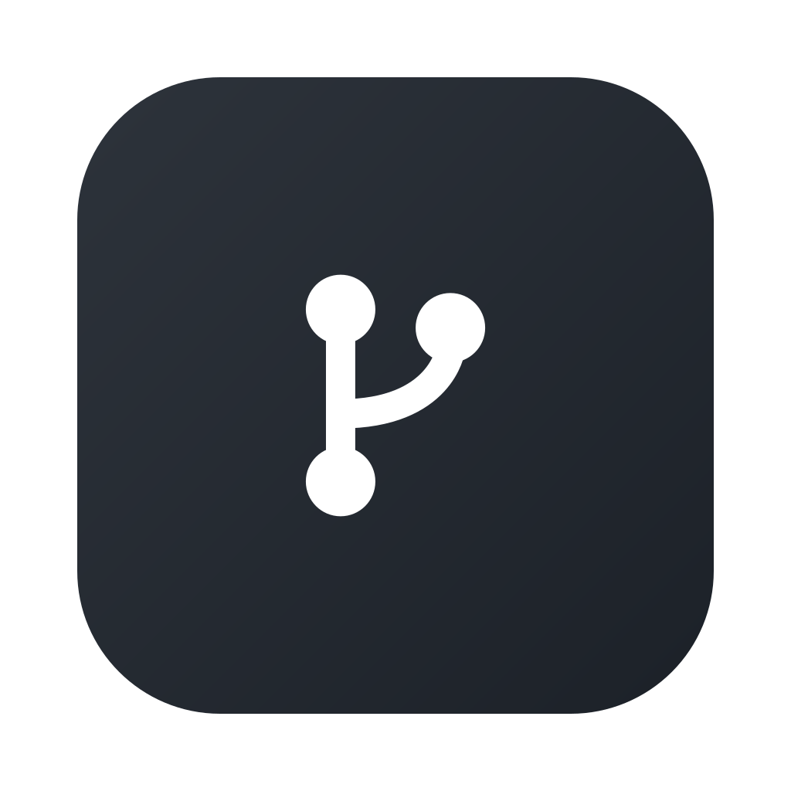
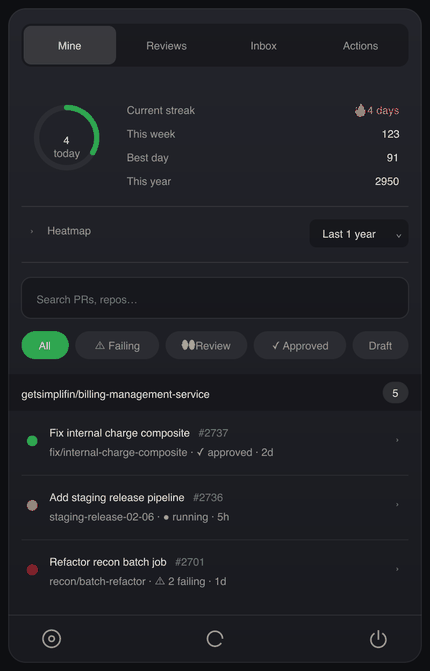
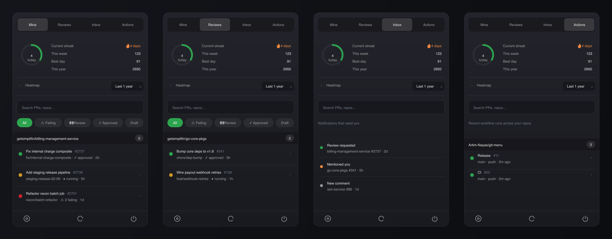

Git MenuPull requests, reviews, a notifications inbox, GitHub Actions
runs, and your contribution streak — without leaving the menu bar.
Powered entirely by the gh CLI, so it rides your existing auth.
brew install --cask artim-nayas/tap/git-menu

Four tabs, one keyboard-driven popover.
Your open PRs and the ones awaiting your review, grouped by repo with live CI and review status.
Review requests, mentions and replies — the notifications that actually need a response.
Recent workflow runs across your repos, with expandable jobs and steps, plus per-PR checks.
Streak, today's count and an expandable heatmap — your activity without opening the browser.
Global hotkey, j/k navigation and instant search across PRs and repos.
Checks for new releases and installs them from Settings. Or just brew upgrade.

Git Menu uses the GitHub CLI for auth — no tokens to paste.
brew install gh gh auth login
brew install --cask \ artim-nayas/tap/git-menu
Prefer a direct download? Grab the .dmg from
Releases.
The app is ad-hoc signed (not notarized); the cask clears the quarantine for you.